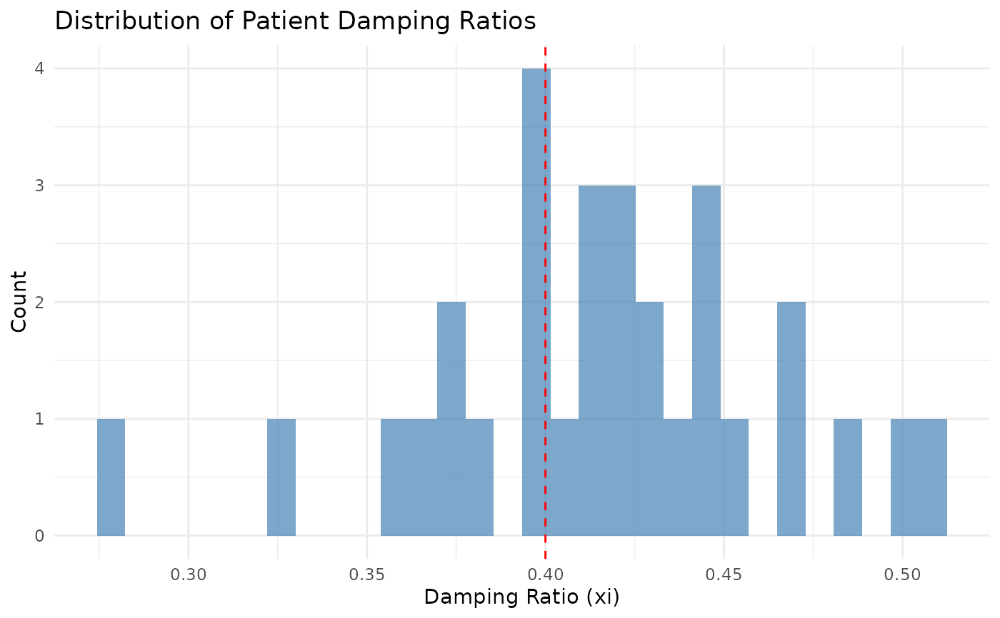
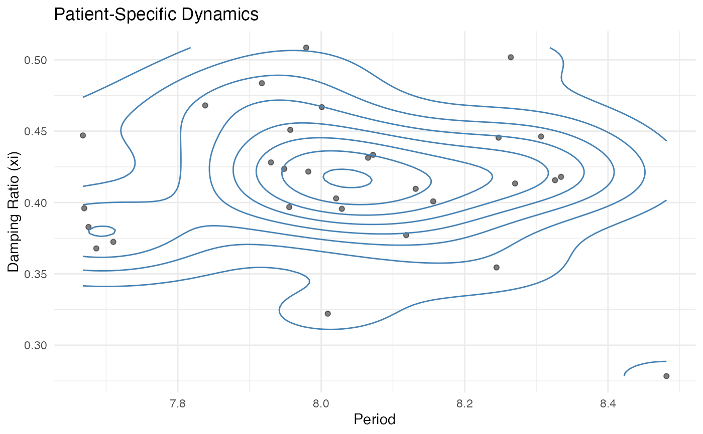
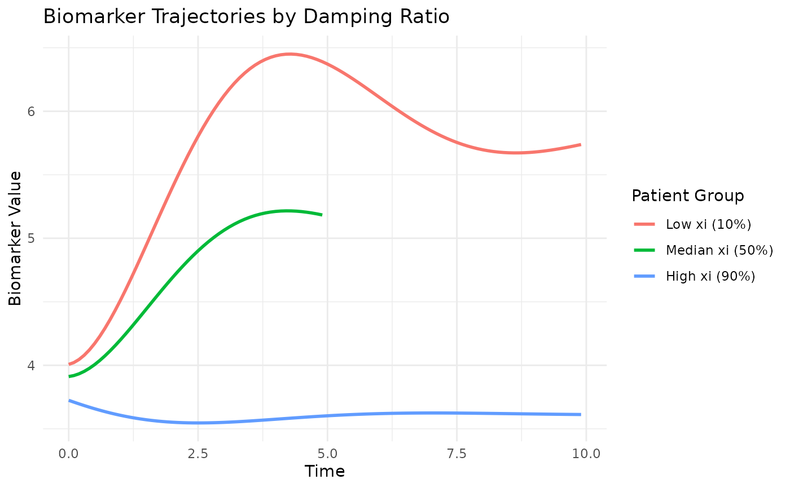
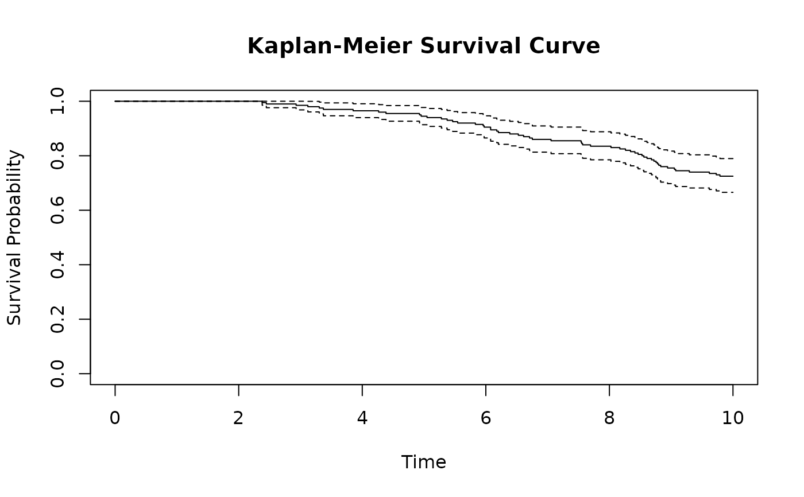

Generates synthetic longitudinal and time-to-event data under a joint modeling framework where the longitudinal biomarker trajectory follows a damped harmonic oscillator model (second-order ODE), and the survival process is associated with the biomarker dynamics through shared random effects and trajectory-dependent hazard functions. The biomarker dynamics are parameterized using physically interpretable parameters: damping ratio, natural period, and excitation amplitude.
Usage
simulate(
n_subjects = 500,
longitudinal = list(xi = c(mean = 0.4, sd = 0.1), period = c(mean = 6, sd = 0.1),
excitation = list(offset = 0, covariates = c(x1 = 0.5, x2 = -0.45)), initial =
list(offset = c(biomarker = -0.5, velocity = -0.1), covariates = list(biomarker =
c(x1 = 0.08, x2 = -0.06), velocity = c(x1 = 0.25, x2 = -0.2))), error_sd = 0.1,
n_measurements = 100),
survival = list(baseline = list(type = "weibull", shape = 2, scale = 15), value = 0.8,
slope = 2, gamma = 1, covariates = c(w1 = 0.6, w2 = -0.8)),
covariates = list(x1 = list(type = "normal", mean = 0, sd = 1), x2 = list(type =
"normal", mean = 0, sd = 1), w1 = list(type = "normal", mean = 0, sd = 1), w2 =
list(type = "binary", prob = 0.5)),
maxt = 10,
seed = 42
)Arguments
- n_subjects
Integer specifying the number of subjects to simulate (default: 500)
- longitudinal
List specifying the longitudinal sub-model parameters:
- xi
Damping ratio \(\xi\) controlling the oscillation decay. Specified as c(mean = ..., sd = ...) for population mean and standard deviation. Values: \(\xi < 1\) (underdamped), \(\xi = 1\) (critically damped), \(\xi > 1\) (overdamped). Default: c(mean = 0.4, sd = 0.05)
- period
Natural period \(T\) of oscillation in time units, related to natural frequency as \(\omega = 2\pi/T\). Specified as c(mean = ..., sd = ...) for population mean and standard deviation. Default: c(mean = 6, sd = 1.0)
- excitation
List specifying external forcing parameters:
- offset
Constant excitation term \(f_0\) (default: 0.0)
- covariates
Named vector of covariate effects \(\boldsymbol{\beta}_{exc}\) on excitation (default: c(x1 = 0.5, x2 = -0.45))
- initial
List specifying initial condition parameters:
- offset
Named vector with baseline initial values:
c(biomarker = ..., velocity = ...)(default: c(biomarker = -0.5, velocity = -0.05))- covariates
List with two named vectors for covariate effects:
- biomarker
Covariate effects on initial biomarker (default: c(x1 = 0.08, x2 = -0.06))
- velocity
Covariate effects on initial velocity (default: c(x1 = 0.25, x2 = -0.2))
- error_sd
Standard deviation \(\sigma_{\epsilon}\) of the measurement error process (default: 0.1)
- n_measurements
Number of longitudinal measurements per subject (default: 100)
- survival
List specifying the survival sub-model parameters:
- baseline
List defining the Weibull baseline hazard function:
- type
Character string specifying the baseline hazard type (currently only "weibull" is supported)
- shape
Weibull shape parameter \(\kappa > 0\) (default: 2.0)
- scale
Weibull scale parameter \(\lambda > 0\) (default: 100.0)
- value
Association parameter \(\alpha_1\) linking current biomarker value to hazard (default: 0.8)
- slope
Association parameter \(\alpha_2\) linking biomarker velocity (or its power) to hazard (default: 2.0)
- gamma
Power parameter for velocity contribution, where \(\gamma = 0\) excludes velocity effect, \(\gamma = 1\) uses linear velocity \(\alpha_2\dot{m}_i(t)\), and \(\gamma = 2\) uses quadratic velocity \(\alpha_2[\dot{m}_i(t)]^2\) (default: 1)
- covariates
Named vector of regression coefficients \(\boldsymbol{\phi}\) for survival covariates (default: c(w1 = 0.6, w2 = -0.8))
- covariates
List defining the distributions of baseline covariates:
- x1
List with
type = "normal",mean = 0,sd = 1for standardized continuous covariate (longitudinal)- x2
List with
type = "normal",mean = 0,sd = 1for standardized continuous covariate (longitudinal)- w1
List with
type = "normal",mean = 0,sd = 1for standardized continuous covariate (survival)- w2
List with
type = "binary"andprob = 0.5for binary covariate (survival)
- maxt
Positive scalar specifying the maximum follow-up time in the study (default: 10 time units)
- seed
Integer seed for random number generation to ensure reproducibility (default: 42)
Value
A list containing four components:
longitudinal_dataData frame comprising longitudinal observations with columns:
id: Subject identifier (integer)time: Observation time point (numeric)observed: Measured biomarker value including measurement error, \(y_{ij}\)biomarker: True underlying biomarker value, \(m_i(t_{ij})\)velocity: First derivative of the biomarker trajectory, \(\dot{m}_i(t_{ij})\)acceleration: Second derivative of the biomarker trajectory, \(\ddot{m}_i(t_{ij})\)x1,x2: Time-invariant covariates (if specified)
survival_dataData frame containing time-to-event data with columns:
id: Subject identifiertime: Observed event or censoring time, \(T_i\)status: Event indicator, \(\delta_i\) (1 = event observed, 0 = censored)w1,w2: Baseline survival covariates (if specified)
stateAn \(n \times 2\) data frame containing initial states \([m_i(0), \dot{m}_i(0)]\) for each subject
random_effectsAn \(n \times 2\) matrix containing subject-specific random effects (centered at zero) for:
dyn_value: Random effect for biomarker level termdyn_slope: Random effect for velocity term
The matrix has attributes
mu(population mean vector of length 2) andsigma(\(2 \times 2\) covariance matrix). These correspond to the random effects specified in the formula structure(biomarker + velocity | id). Fixed effects (dyn_constand covariate terms) are not included as they have no between-subject variability.
Details
The simulation framework implements a joint model comprising longitudinal and survival sub-models linked through shared random effects and trajectory-dependent associations.
Default Parameter Design
The default parameters are calibrated to achieve the following properties:
Approximately 60\
Initial biomarker difference between risk groups: ~0.2
Final biomarker difference between event and censored groups: ~0.7
Damping ratio centered at 0.4 (underdamped oscillations)
Significant velocity differences between patients with different risk profiles, enabling survival prediction based on trajectory dynamics
These settings produce realistic heterogeneity in biomarker trajectories while maintaining numerical stability for joint model estimation.
Longitudinal Sub-model
The biomarker trajectory \(m_i(t)\) for subject \(i\) follows a damped harmonic oscillator with external forcing: $$\ddot{m}_i(t) + 2\xi\omega\dot{m}_i(t) + \omega^2 m_i(t) = k \omega^2 [f_0 + \mathbf{X}_i^T\boldsymbol{\beta}_{exc}]$$ where:
\(\omega = 2\pi/T\) is the natural angular frequency
\(\xi\) is the damping ratio determining oscillation behavior
\(k\) scales the excitation amplitude
\(f_0\) is the constant excitation term
\(\mathbf{X}_i\) contains time-invariant covariates
\(\boldsymbol{\beta}_{exc}\) represents covariate effects on excitation
Initial conditions are specified as:
\(m_i(0) = \mu_{m,0} + \mathbf{X}_i^T\boldsymbol{\beta}_{m,init}\)
\(\dot{m}_i(0) = \mu_{v,0} + \mathbf{X}_i^T\boldsymbol{\beta}_{v,init}\)
The observed longitudinal measurements incorporate additive Gaussian noise: $$y_{ij} = m_i(t_{ij}) + b_i + \epsilon_{ij}$$ where \(\epsilon_{ij} \sim \mathcal{N}(0, \sigma_\epsilon^2)\) represents independent measurement error.
Survival Sub-model
The instantaneous hazard function incorporates both current biomarker value and velocity (or its power): $$\lambda_i(t) = \lambda_0(t)\exp(\alpha_1 m_i(t) + \alpha_2[\dot{m}_i(t)]^\gamma + \mathbf{W}_i^T\boldsymbol{\phi})$$ where:
\(\lambda_0(t)\) denotes the Weibull baseline hazard: \(\lambda_0(t) = (\kappa/\lambda)(t/\lambda)^{\kappa-1}\)
\(\alpha_1\) quantifies the association with current biomarker value
\(\alpha_2\) quantifies the association with biomarker velocity (or its power)
\(\gamma \in \{0, 1, 2\}\) determines the power of velocity: 0 (no velocity effect), 1 (linear), or 2 (quadratic)
\(\mathbf{W}_i\) contains baseline covariates
\(\boldsymbol{\phi}\) represents covariate effects on survival
Patient-Specific Dynamics
The function models patient heterogeneity through continuous distributions of dynamics parameters \(\xi_i\) (damping ratio) and \(T_i\) (period): $$\xi_i \sim \mathcal{N}(\mu_\xi, \sigma_\xi^2), \quad T_i \sim \mathcal{N}(\mu_T, \sigma_T^2)$$ These are transformed to ODE parameters via: $$\omega_i = 2\pi/T_i, \quad \beta_{1,i} = -\omega_i^2, \quad \beta_{2,i} = -2\xi_i\omega_i$$ The transformation uses the Delta method to preserve the correct covariance structure in the ODE parameter space.
Random Effects Structure: Only \(\beta_{1,i}\)
(dyn_value) and \(\beta_{2,i}\) (dyn_slope) have
subject-specific random effects. The constant excitation term
(dyn_const) and all covariate excitation coefficients
(dyn_x1, dyn_x2, etc.) are fixed effects that take
the same population mean value for all subjects, with no
between-subject variability. This structure corresponds to the
formula specification observed ~ biomarker + velocity + x1 +
x2 + (biomarker + velocity | id).
Examples
# Example 1: Simple simulation with default parameters
sim_basic <- simulate(n_subjects = 50, seed = 123)
# Explore the output structure
names(sim_basic)
#> [1] "longitudinal_data" "survival_data" "state"
#> [4] "random_effects"
head(sim_basic$longitudinal_data)
#> id time biomarker velocity acceleration observed x1 x2
#> 1 1 0.0 -0.5600372 -0.29078261 0.4950795 -0.5607406 -0.5604756 0.2533185
#> 2 1 0.1 -0.5866769 -0.24236850 0.4727285 -0.4816559 -0.5604756 0.2533185
#> 3 1 0.2 -0.6085903 -0.19632557 0.4477032 -0.5387563 -0.5604756 0.2533185
#> 4 1 0.3 -0.6260290 -0.15289720 0.4205406 -0.7025991 -0.5604756 0.2533185
#> 5 1 0.4 -0.6392633 -0.11227160 0.3917394 -0.7033609 -0.5604756 0.2533185
#> 6 1 0.5 -0.6485810 -0.07458886 0.3617663 -0.6137664 -0.5604756 0.2533185
head(sim_basic$survival_data)
#> id time status w1 w2
#> 1 1 10.000000 0 -0.71040656 1
#> 2 2 6.540180 1 0.25688371 0
#> 3 3 10.000000 0 -0.24669188 1
#> 4 4 10.000000 0 -0.34754260 1
#> 5 5 10.000000 0 -0.95161857 1
#> 6 6 6.241667 1 -0.04502772 0
# Check patient-specific dynamics
# Each patient has unique dynamics drawn from population distribution
head(sim_basic$random_effects)
#> dyn_value dyn_slope
#> [1,] -0.004926872 -0.230027933
#> [2,] 0.025789971 0.007625015
#> [3,] 0.026933961 0.064858722
#> [4,] -0.031166975 0.092013359
#> [5,] 0.035887409 -0.096655089
#> [6,] -0.073971668 -0.222344650
# Population parameters (mean and covariance)
attr(sim_basic$random_effects, "mu") # Mean of dynamics distribution
#> dyn_value dyn_slope
#> -1.096623 -0.837758
attr(sim_basic$random_effects, "sigma") # Covariance matrix
#> [,1] [,2]
#> [1,] 0.0013362015 0.0005103914
#> [2,] 0.0005103914 0.0440598636
# Example 2: Heterogeneous patient dynamics
# Patients differ in damping ratio (xi) and oscillation period
sim_hetero <- simulate(
n_subjects = 100,
longitudinal = list(
xi = c(mean = 0.5, sd = 0.2), # Mean damping ratio with variation
period = c(mean = 8, sd = 2), # Mean period with variation
excitation = list(
offset = 4.0, # Constant external force
covariates = c(x1 = 0.8, x2 = -0.5) # Covariate effects
),
initial = list(
offset = c(biomarker = 3.8, velocity = -0.1),
covariates = list(
biomarker = c(x1 = 0.1, x2 = -0.1),
velocity = c(x1 = 0.1, x2 = -0.05)
)
),
error_sd = 0.1,
n_measurements = 100
),
covariates = list(
x1 = list(type = "normal", mean = 0, sd = 1),
x2 = list(type = "normal", mean = 0, sd = 1),
w1 = list(type = "normal", mean = 0, sd = 1),
w2 = list(type = "binary", prob = 0.5)
),
seed = 456
)
# Example 3: Nearly uniform dynamics (low variability)
# Useful for testing when patient heterogeneity should be minimal
sim_uniform <- simulate(
n_subjects = 50,
longitudinal = list(
xi = c(mean = 0.707, sd = 0.01), # Very small variation
period = c(mean = 5, sd = 0.1), # Very small variation
excitation = list(offset = 0, covariates = numeric(0)),
initial = list(
offset = c(biomarker = -2, velocity = 0),
covariates = list(biomarker = numeric(0), velocity = numeric(0))
),
error_sd = 0.15,
n_measurements = 50
),
seed = 789
)
# Verify low variability - all patients should have similar dynamics
apply(sim_uniform$random_effects, 2, sd)
#> dyn_value dyn_slope
#> 0.07220340 0.04453099
# Example 4: Comprehensive simulation with survival outcomes
sim_full <- simulate(
n_subjects = 200,
longitudinal = list(
xi = c(mean = 0.4, sd = 0.05),
period = c(mean = 8, sd = 0.3),
excitation = list(
offset = 4.0,
covariates = c(x1 = 0.8, x2 = -0.5)
),
initial = list(
offset = c(biomarker = 3.8, velocity = -0.1),
covariates = list(
biomarker = c(x1 = 0.1, x2 = -0.1),
velocity = c(x1 = 0.1, x2 = -0.05)
)
),
error_sd = 0.1,
n_measurements = 100
),
survival = list(
baseline = list(type = "weibull", shape = 3.0, scale = 23),
value = 0.4, # Effect of biomarker value on hazard
slope = 1.5, # Effect of biomarker velocity on hazard
gamma = 1, # Linear velocity effect
covariates = c(w1 = 0.4, w2 = -0.6)
),
covariates = list(
x1 = list(type = "normal", mean = 0, sd = 1),
x2 = list(type = "normal", mean = 0, sd = 1),
w1 = list(type = "normal", mean = 0, sd = 1),
w2 = list(type = "binary", prob = 0.5)
),
maxt = 10,
seed = 42
)
# Visualize patient-specific dynamics distribution
library(ggplot2)
# Recover original xi and period from dynamics parameters
mu <- attr(sim_full$random_effects, "mu")
dynamics_df <- as.data.frame(sim_full$random_effects)
dynamics_df$omega <- sqrt(-dynamics_df$dyn_value - mu["dyn_value"])
dynamics_df$xi_implied <- -(dynamics_df$dyn_slope + mu["dyn_slope"]) /
(2 * dynamics_df$omega)
dynamics_df$period_implied <- 2 * pi / dynamics_df$omega
# Distribution of damping ratios
ggplot(dynamics_df, aes(x = xi_implied)) +
geom_histogram(bins = 30, fill = "steelblue", alpha = 0.7) +
geom_vline(xintercept = 0.4, color = "red", linetype = "dashed") +
labs(title = "Distribution of Patient Damping Ratios",
x = "Damping Ratio (xi)", y = "Count") +
theme_minimal()

# Joint distribution of xi and period
ggplot(dynamics_df, aes(x = period_implied, y = xi_implied)) +
geom_point(alpha = 0.5) +
geom_density_2d(color = "steelblue") +
labs(title = "Patient-Specific Dynamics",
x = "Period", y = "Damping Ratio (xi)") +
theme_minimal()

# Compare trajectories for patients with different dynamics
# Select patients at 10th, 50th, 90th percentiles of xi
quantiles <- quantile(dynamics_df$xi_implied, probs = c(0.1, 0.5, 0.9))
example_ids <- sapply(quantiles, function(q) {
which.min(abs(dynamics_df$xi_implied - q))
})
plot_data <- sim_full$longitudinal_data[
sim_full$longitudinal_data$id %in% example_ids,
]
plot_data$xi_group <- factor(
plot_data$id,
levels = example_ids,
labels = c("Low xi (10%)", "Median xi (50%)", "High xi (90%)")
)
ggplot(plot_data, aes(x = time, y = biomarker, color = xi_group)) +
geom_line(linewidth = 1) +
labs(title = "Biomarker Trajectories by Damping Ratio",
x = "Time", y = "Biomarker Value",
color = "Patient Group") +
theme_minimal()

# Kaplan-Meier survival curve
library(survival)
km_fit <- survfit(Surv(time, status) ~ 1, data = sim_full$survival_data)
plot(km_fit, xlab = "Time", ylab = "Survival Probability",
main = "Kaplan-Meier Survival Curve")
